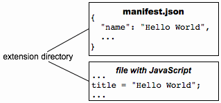
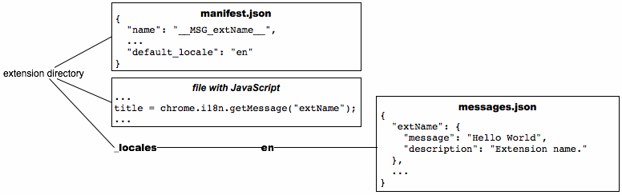
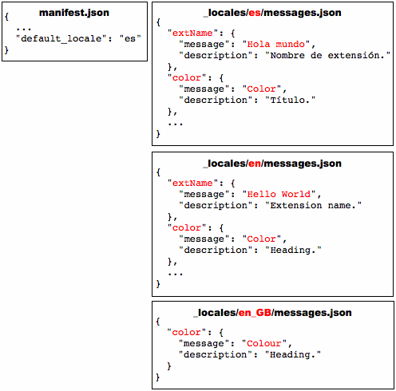

Except as otherwise noted, the content of this page is licensed under the Creative Commons Attribution 3.0 License, and code samples are licensed under the BSD License.
©2011 Google
An internationalized extension can be easily localized — adapted to languages and regions that it didn't originally support.
To internationalize your extension,
you need to put all of its user-visible strings into a file
named messages.json.
Each time you localize your extension
you add a messages file
under a directory
named _locales/localeCode,
where localeCode is a code such as
en for English.
Here's the file hierarchy
for an internationalized extension that supports
English (en),
Spanish (es), and
Korean (ko):

Say you have an extension with the files shown in the following figure:
To internationalize this extension, you name each user-visible string and put it into a messages file. The extension's manifest, CSS files, and JavaScript code use each string's name to get its localized version.
Here's what the extension looks like when it's internationalized (note that it still has only English strings):

Important:
If an extension has a _locales directory,
the manifest
must define "default_locale".
Some notes about internationalizing extensions:
You can use any of the supported locales. If you use an unsupported locale, Google Chrome ignores it.
manifest.json
and CSS files,
refer to a string named messagename like this:
__MSG_messagename__
chrome.i18n.getMessage("messagename")
In each call to getMessage(),
you can supply up to 9 strings
to be included in the message.
See Examples: getMessage
for details.
Some messages, such as @@bidi_dir and @@ui_locale,
are provided by the internationalization system.
See the Predefined messages section
for a full list of predefined message names.
messages.json,
each user-visible string has a name, a "message" item,
and an optional "description" item.
The name is a key
such as "extName" or "search_string"
that identifies the string.
The "message" specifies
the value of the string in this locale.
The optional "description"
provides help to translators,
who might not be able to see how the string is used in your extension.
For example:
{
"search_string": {
"message": "hello%20world",
"description": "The string we search for. Put %20 between words that go together."
},
...
}
For more information, see Formats: Locale-Specific Messages.
Once an extension is internationalized,
translating it is simple.
You copy messages.json,
translate it,
and put the copy into a new directory under _locales.
For example, to support Spanish,
just put a translated copy of messages.json
under _locales/es.
The following figure shows the previous extension
with a new Spanish translation.
The internationalization system provides a few predefined
messages to help you localize your extension.
These include @@ui_locale,
so you can detect the current UI locale,
and a few @@bidi_... messages
that let you detect the text direction.
The latter messages have similar names to constants in the
gadgets BIDI (bi-directional) API.
The special message @@extension_id
can be used in the CSS and JavaScript files of any extension,
whether or not the extension is localized.
This message doesn't work in manifest files.
The following table describes each predefined message.
| Message name | Description |
|---|---|
@@extension_id |
The extension ID;
you might use this string to construct URLs
for resources inside the extension.
Even unlocalized extensions can use this message.
Note: You can't use this message in a manifest file. |
@@ui_locale |
The current locale; you might use this string to construct locale-specific URLs. |
@@bidi_dir |
The text direction for the current locale, either "ltr" for left-to-right languages such as English or "rtl" for right-to-left languages such as Japanese. |
@@bidi_reversed_dir |
If the @@bidi_dir is "ltr", then this is "rtl";
otherwise, it's "ltr". |
@@bidi_start_edge |
If the @@bidi_dir is "ltr", then this is "left";
otherwise, it's "right". |
@@bidi_end_edge |
If the @@bidi_dir is "ltr", then this is "right";
otherwise, it's "left". |
Here's an example of using @@extension_id in a CSS file
to construct a URL:
body {
background-image:url('chrome-extension://__MSG_@@extension_id__/background.png');
}
If the extension ID is abcdefghijklmnopqrstuvwxyzabcdef, then the bold line in the previous code snippet becomes:
background-image:url('chrome-extension://abcdefghijklmnopqrstuvwxyzabcdef/background.png');
Here's an example of using @@bidi_* messages in a CSS file:
body {
direction: __MSG_@@bidi_dir__;
}
div#header {
margin-bottom: 1.05em;
overflow: hidden;
padding-bottom: 1.5em;
padding-__MSG_@@bidi_start_edge__: 0;
padding-__MSG_@@bidi_end_edge__: 1.5em;
position: relative;
}
For left-to-right languages such as English, the bold lines become:
dir: ltr; padding-left: 0; padding-right: 1.5em;
You can choose from many locales,
including some (such as en)
that let a single translation support multiple variations of a language
(such as en_GB and en_US).
Extensions can use any of the locales that the Chrome Web Store supports.
You don't have to define every string for every locale
that your internationalized extension supports.
As long as the default locale's messages.json file
has a value for every string,
your extension will run no matter how sparse a translation is.
Here's how the extension system searches for a message:
en_GB),
the system first looks for the message in
_locales/en_GB/messages.json.
If that file exists and the message is there,
the system looks no further.
en_GB messages file
doesn't exist or doesn't contain the message,
the system looks in the en messages file.
If that file exists and the message is there,
the system looks no further.
_locales/en_GB/messages.json
nor _locales/en/messages.json contains the message,
the extension uses the message from
_locales/es/messages.json.
In the following figure, the message named "colores" is in all three locales that the extension supports, but "extName" is in only two of the locales. Wherever a user running Google Chrome in US English sees the label "Colors", a user of British English sees "Colours". Both US English and British English users see the extension name "Hello World". Because the default language is Spanish, users running Google Chrome in any non-English language see the label "Colores" and the extension name "Hola mundo".
To test translations, you might want to set your browser's locale. This section tells you how to set the locale in Windows, Mac OS X, and Linux.
You can change the locale using either a locale-specific shortcut or the Google Chrome UI. The shortcut approach is quicker, once you've set it up, and it lets you use several languages at once.
To create and use a shortcut that launches Google Chrome with a particular locale:
--lang and
--user-data-dir flags.
The target should look something like this:
path_to_chrome.exe --lang=locale --user-data-dir=c:\locale_profile_dir
For example, to create a shortcut
that launches Google Chrome in Spanish (es),
you might create a shortcut named chrome-es
that has the following target:
path_to_chrome.exe --lang=es --user-data-dir=c:\chrome-profile-es
You can create as many shortcuts as you like, making it easy to test your extension in multiple languages. For example:
path_to_chrome.exe --lang=en --user-data-dir=c:\chrome-profile-en path_to_chrome.exe --lang=en_GB --user-data-dir=c:\chrome-profile-en_GB path_to_chrome.exe --lang=ko --user-data-dir=c:\chrome-profile-ko
Note:
Specifying --user-data-dir is optional but handy.
Having one data directory per locale
lets you run the browser
in several languages at the same time.
A disadvantage is that because the locales' data isn't shared,
you have to install your extension multiple times — once per locale,
which can be challenging when you don't speak the language.
For more information, see
Creating and Using Profiles.
Here's how to change the locale using the UI on Google Chrome for Windows:
To change the locale on Mac, you use the system preferences.
To change the locale on Linux, first quit Google Chrome. Then, all in one line, set the LANGUAGE environment variable and launch Google Chrome. For example:
LANGUAGE=es ./chrome
You can find simple examples of internationalization in the examples/api/i18n directory. For a complete example, see examples/extensions/news. For other examples and for help in viewing the source code, see Samples.
The following code gets a localized message from the browser and displays it as a string. It replaces two placeholders within the message with the strings "string1" and "string2".
function getMessage() {
var message = chrome.i18n.getMessage("click_here", ["string1", "string2"]);
document.getElementById("languageSpan").innerHTML = message;
}
Here's how you'd supply and use a single string:
// In JavaScript code
status.innerText = chrome.i18n.getMessage("error", errorDetails);
// In messages.json
"error": {
"message": "Error: $details$",
"description": "Generic error template. Expects error parameter to be passed in.",
"placeholders": {
"details": {
"content": "$1",
"example": "Failed to fetch RSS feed."
}
}
}
For more information about placeholders, see the
Locale-Specific Messages page.
For details on calling getMessage(), see the
API reference.
The following code gets accept-languages from the browser and displays them as a string by separating each accept-language with ','.
function getAcceptLanguages() {
chrome.i18n.getAcceptLanguages(function(languageList) {
var languages = languageList.join(",");
document.getElementById("languageSpan").innerHTML = languages;
})
}
For details on calling getAcceptLanguages(), see the
API reference.
Gets the accept-languages of the browser. This is different from the locale used by the browser; to get the locale, use window.navigator.language.
The callback parameter should specify a function that looks like this:
function(array of string languages) {...};
Gets the localized string for the specified message. If the message is missing, this method returns an empty string (''). If the format of the getMessage() call is wrong — for example, messageName is not a string or the substitutions array is empty or has more than 9 elements — this method returns undefined.
messages.json file.